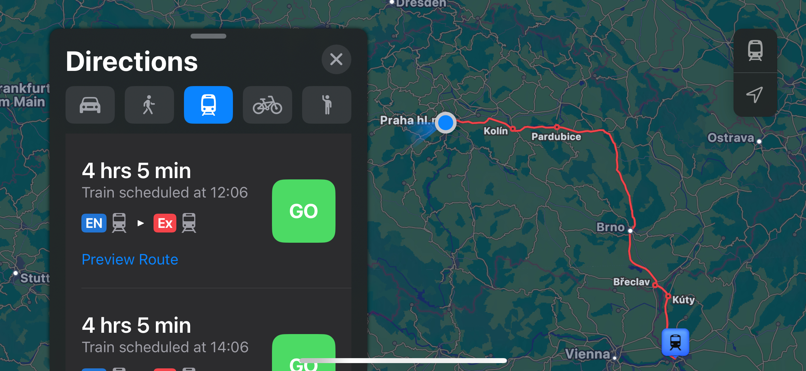
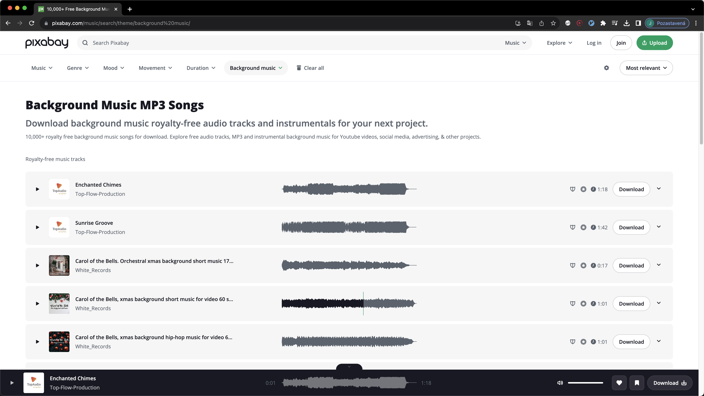
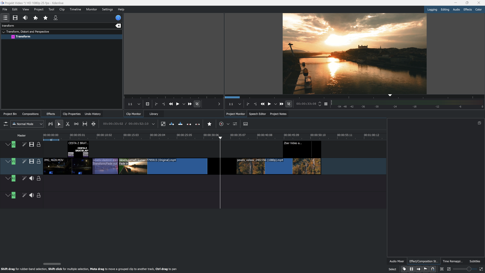
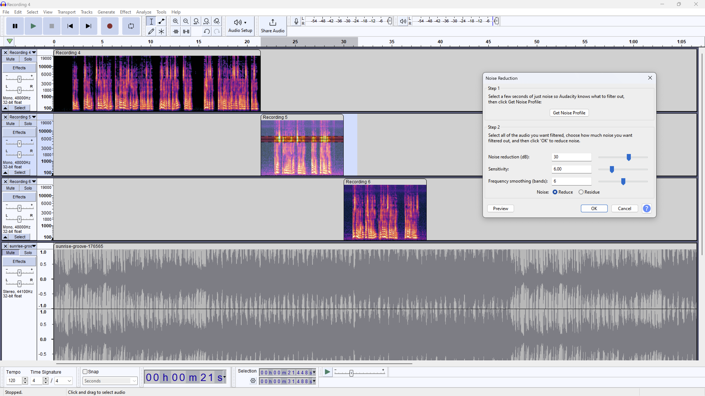

Oba pocházíme ze Slovenska, a tak nás přirozeně napadlo, jak tuto skutečnost začlenit do naší semestrální práce.
Chtěli jsme totiž zahrnout něco typického pro oba. Pro nás oba bylo také společné, že jsme cestovali z
Bratislavy do Prahy. Toto cestování bylo velmi záživné a krásné, ale přineslo určité vtipné situace. V
našem
videu jsme vám ukázali krásy Bratislavy a postupně jsme se přesunuli do Prahy. Cesta byla nelehká a plná
překážek.


Při natáčení snímků jsme využili mobilní telefon.
Natáčeli jsme ve voze během cesty Bratislavou a na hlavním
nádraží v Bratislavě.
Obrazové zdroje pro webovou stránku byly buď staženy ze stránky Freepik, nebo vytvořeny vlastníma
rukama.


Zpracování a úpravy zvukového záznamu jsme prováděli v programu Audacity. Zkrátili jsme nahrávky na požadovanou
délku, odstranili rušivý šum a upravili hlasitost.
Tvorbu videa jsme realizovali v programu Kdenlive. Importovali jsme
všechny
nahrávky a zvukové stopy a vytvořili
výsledné video. Využili jsme efekty přechodů a také jsme přidali titulky.